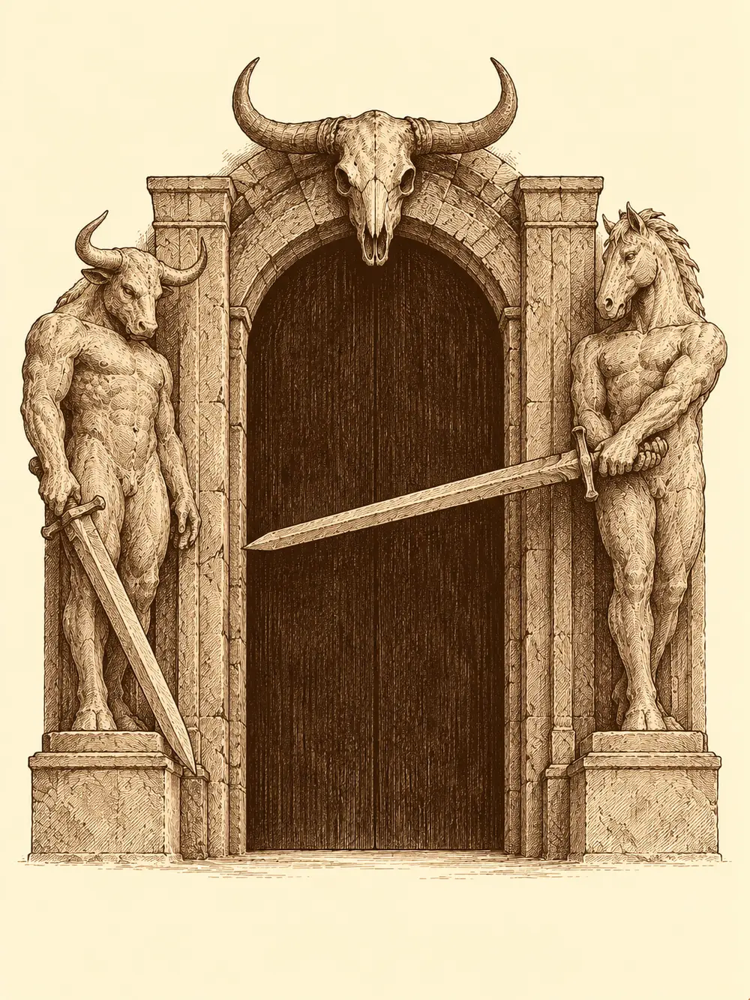

Capítulo 95
La Puerta Negra
Libro VI · La Puerta Negra
En la base de Sho olía a tinta fresca y a hierro recién arrancado de la tierra. Jin tenía todavía las uñas negras de la mina y extendía sobre la mesa los papeles de un negocio que hasta hacía poco había sido solo una conversación de taberna. Ikari y él habían pagado mil monedas por dos locales contiguos, uno para gimnasio y otro para taberna, comprados y no alquilados, aunque el funcionario había dejado caer que quizá vinieran impuestos más adelante. Faltaba casi todo lo demás. Jin buscaba un herrero que le forjara las pesas y había bajado él mismo a picar el hierro.
Banzo volvía de visitar al pescador que lo había traído desde Brunami. El viejo le había aconsejado atar una cadena a un par de arpones para alcanzar a los enemigos que vuelan o se encaraman donde no llega un brazo, y el goliat había dejado encargados los materiales esa misma mañana. Palayer, en cambio, descansaba por orden ajena: había pasado en el frente del Sur más tiempo del que nadie le pedía, hasta que la mandaron a casa unos días.
Danifae salió de su habitación, saludó con desgana y, al cruzarse con los ojos de Palayer, movió los dedos en el lenguaje de signos de los drow. Mientras su boca hablaba de recados en Ukio, sus manos contaban otra cosa. Seguía buscando las esferas para romper su vínculo con Lolth y librarse de la casa que la perseguía. Le faltaba una, y esa estaba dentro de un pequeño demonio amigo de los cazadores. ¿Sabía Palayer cómo sacarla? La paladina había matado algún demonio, pero no sabía vaciarlos sin romperlos. Respondió que lo investigarían juntas, y Danifae le apoyó la mano en la armadura en señal de gratitud.
Banzo tenía una conversación pendiente con ella. Salieron al patio y, antes de seguirlo, la drow le pidió a Palayer por signos que la vigilara.
"No te pido que confíes en mí", le dijo el goliat. "Solo quiero enseñarte algo".
Del suelo brotaron figuras pálidas, sus ancestros, y Danifae llevó las manos a las empuñaduras. Banzo le puso la mano en el hombro. Los espíritus se deshicieron como niebla y la niebla dibujó una aldea derruida, casas reventadas, cuerpos tendidos. Era su hogar. No sabía quién lo había arrasado. Los drow solían acercarse a su tribu a comerciar con esclavos, sin problemas, pero en los últimos tiempos venían demasiado y los había visto hablar con los jefes. Le preguntó si sabía algo de aquella guerra.
Danifae contempló la aldea de humo con un gesto que no era exactamente pena.
"Así que tú también huyes de la guerra de Brunami".
Banzo le contó una verdad peor. Cuando partió no sabía que hubiera guerra. A las pocas horas de marcha, desde lejos, vio cómo atacaban la aldea. Todavía se oían los gritos. Y se quedó quieto. No supo si fue miedo, pero no volvió para ayudarlos.
"No busco venganza para los muertos. Busco respuestas para los vivos".
Ella dijo que había huido de aquella guerra hacia Kuroto mucho antes que él. Cuando Banzo le preguntó quién la había empezado, lo miró fijamente un buen rato.
"Fuisteis vosotros. Los goliats os aliasteis con el rey del Norte".
Los espíritus se desvanecieron de golpe. Banzo se quedó repasando en silencio gestos de su tribu que de pronto parecían encajar en otro sitio. Le dio las gracias y le pidió que, si se enteraba de algo sobre los supervivientes, se lo dijera. Danifae lo prometió y le dio unas palmadas. Banzo la creyó sin reservas.
Apenas el goliat cerró la puerta, un golpe seco la reventó desde fuera. La hoja le rozó el pelo y en el umbral apareció alguien bajo, ancho como un tonel, con una barba enorme y un mandoble a la espalda.
"Esto, hola. ¿Esto es el gremio de cazadores? Tendríais que hacer la puerta más fuerte, apenas la he tocado".
Levantó la cabeza, y la siguió levantando, hasta encontrar la cara de Banzo. Este se volvió hacia los demás encantado: aquel tipo era exactamente su contrario.
"Mi nombre es Asgar", dijo el recién llegado. "Espero que no lo olvides, caballero. Un hombre muy grande para alguien tan pequeño... Eso ya lo veremos. Si nos damos un cabezazo, veremos quién es más pequeño".
Banzo se quitó el casco. Salieron a la calle, tomaron carrerilla, Jin contó hasta tres con resignación y el choque sonó como dos troncos al caer. Fue Banzo quien retrocedió un paso con la frente ardiendo.
"Banzo, de las Cumbres Nevadas".
"Asgar, de las Colinas de Hierro".
Se prometieron una pelea de verdad algún día. Asgar explicó que su maestro le había recomendado Kuroto para hacerse fuerte y que llevaba dos semanas buscando la sede, entrando en casas equivocadas; en una, una anciana y dos niños habían estado a punto de pegarle. Se unió sin preguntar a la visita que tenían prevista a Ukio y cruzó el portal de cabeza, porque así entraban los valientes. Salió al otro lado blanco como la cal.
En la base de Ukio, Banzo ofreció un pescado al kamaitachi. La comadreja olfateó, se acercó a la defensiva y de pronto el pescado ya no estaba en la mano del goliat. Se lo llevó con un gruñido de desprecio. Banzo aseguró que lo tenía casi amaestrado.
Jin, mientras tanto, se había quitado el casco y avanzaba sin una palabra hacia la sala donde esperaba Shizuka. Se agachó hasta su altura.
"Lo siento".
"¿Y qué más?".
"Quiero que sepas que siempre estaré para ti. Aunque no seamos familia de sangre, te considero mi hija y no quiero que te pase nada. Si he estado fuera ha sido para que tuvierais un futuro, tú y tu hermano. Desde el día que te rescaté en aquella montaña vi algo distinto en ti. Y cuando perdí a Sirth me encerré en una espiral de venganza y odio de la que no he sabido salir hasta hace poco".
Shizuka le tomó la cabeza entre sus dos manitas.
"Va, Jin, tranquilo. Yo también te quiero. No llores".
Él le devolvió el abrazo y se le escapó una lágrima. La niña le dijo que Sirth ya no estaba, pero que no pasaba nada, y le pidió que levantara la cara. Jin le prometió quedarse cerca hasta que lo llamaran.
Banzo presentó a Asgar ante la que llamó reina de Kuroto: una kender diminuta, con dos coletas y una armadura de cuero atada con cuerdas para que no se le cayera.
"Hala, es un niño con barba".
Asgar replicó que tenía cuarenta y cinco años, que era de los enanos más altos y que era el mayor guerrero de todos los tiempos, aunque aún no había vencido a su maestro. A Shizuka le brillaron los ojos.
"Yo quiero probar. Pégame bien fuerte".
El enano la golpeó y le acertó en la cabeza. Ella se frotó la frente, sacó la lengua por un lado de la boca, concentrada, y de sus labios brotó una voz de ultratumba. A Asgar empezó a pudrírsele la piel de los brazos. Shizuka se quedó algo decepcionada, porque la última vez le había salido más fuerte, y antes de que nadie dijera nada le metió una poción en la boca. El calor le recorrió el cuerpo al enano. Su maestro tenía razón: allí iba a hacerse muy fuerte.

Mosto, el tanuki borracho de la casa, se abrazó a la cabeza de Asgar convencido de que era un primo, y Shizuka aprovechó para contarle al recién llegado toda la historia de los cazadores desde el principio. Duró tanto que Jin se echó una siesta contra la pared. Al final del relato aparecía una puerta negra en el Sur, y Jin recordó que tenía dos estatuas: los guardianes de una habían sido derrotados por otros cazadores, y la otra seguía intacta. Convenía ir a verla. Shizuka quiso acompañarlos, pero Danifae se la llevó de la mano a hacer unas compras.
El portal del Sur los dejó bajo una llovizna fina que a Palayer le encantaba. El campamento ocupaba una tierra más árida que el resto de Kuroto: una gran carpa de comedor, las tiendas de los generales en lo alto, carretas de víveres. Era la última frontera antes de las montañas que guardaban el territorio de Otakemaru.
La comandante Aka no estaba. Un soldado les contó que habían fabricado vendas para acercarse a la puerta, porque mirarla volvía locos a los suyos; los cazadores parecían resistirlo mejor. Dos samuráis del shogun los acompañarían. Palayer compró cuatro raciones de una sopa espesa que había descubierto en el frente, y Asgar, después de tomársela de un trago, la abrazó y declaró que quien le daba buena comida era su amiga.
Caminaron un par de horas entre montañas rojizas y afiladas. Al final del sendero los samuráis se vendaron los ojos. La puerta apareció entonces, inmensa y de un negro que no reflejaba nada, con una calavera cornuda encima. En los marcos había dos esculturas armadas, una de aspecto bovino y otra equina. Parecían hechas para cerrar el paso cruzando las espadas, pero solo la equina seguía en esa postura; la otra tenía el arma apartada. Discutieron si convenía abrir aquello. Quizá fuese un camino para atacar a Otakemaru. Quizá, si estaba sellado con tanta magia, lo sensato fuera dejarlo así.
Asgar fue el primero en mirar la figura equina, y vio a Chancleta, el poni de su juventud. Sintió una necesidad imposible de acariciarlo.
"Banzo, mira. Es Chancleta. Es mi poni".
Banzo y Jin clavaron la vista en el suelo. Palayer levantó la suya y lo que vio fue a Lolth, que giraba el rostro de piedra hacia ella y le sonreía con burla. Le entraron unas ganas tremendas de destrozarla. Asgar la vio venir y se plantó delante de la estatua.
"Esto no lo vas a tocar. Es mi poni".
Ninguno cedió. Jin, sin levantar los ojos, dijo lo que pensaba: la puerta les mostraba lo que cada uno quería ver, y los otros cazadores habían deshecho el hechizo tocando la estatua. Banzo descargó su arma contra ella.
Un líquido negro brotó del punto de impacto, trepó por el mango y le subió por los brazos, del mismo negro apagado que la puerta, hasta llegarle al cuello. Jin lo tocó sin pensar y la negrura lo alcanzó también. Palayer apartó al enano y golpeó la figura, y Asgar le lanzó un puñetazo a la cara mientras el negro los cubría a los dos.
Los envolvió una oscuridad absoluta. Cada uno oía solo su propia voz. Luego, gritos, piedras que chocaban, fuego crepitando, un rumor de tormenta cada vez más fuerte, hasta que pudieron abrir los ojos. Estaban en las mismas posturas; el puño de Asgar terminó su recorrido contra el casco de Palayer. El cielo era rojo y lo cruzaban criaturas aladas. Del suelo, sembrado de huesos, brotaban pilares de fuego que escupían lava. No había ningún poni ni ninguna diosa araña.
Palayer oyó primero las uñas rascando la piedra. De detrás de las rocas salieron humanoides retorcidos, encorvados, con protuberancias por todo el cuerpo, uñas capaces de partir un hueso y dientes que goteaban. La paladina hundió el mayal en el más cercano y la luz que lo acompañaba levantó chispas que la criatura no soportaba. Otra miró a Jin y emitió un sonido que buscaba quebrarlo por dentro; él aguantó y le respondió con su larga espada. Banzo cruzó una mirada con Asgar, lo agarró del cinturón y lo lanzó por el aire contra un demonio. El enano cayó sobre él con el acero por delante.
Entonces algo enorme se desplomó desde lo alto. Cuando el polvo se asentó apareció una criatura con cabeza de caballo que arrastraba una espada de dos manos tan grande que iba cortando las piedras. Aulló, su cuerpo se encendió de un rojo intenso y cargó contra Banzo. Los golpes le entraron de lleno. Asgar abandonó a su adversario sin importarle la espalda.
"¡Yo te protejo, Banzo!".
Le abrió dos tajos al gigante, y a su alrededor aparecieron los ancestros del enano para acosarlo y estorbarle cada movimiento. Banzo los vio y algo se le aflojó en el pecho. Eran los golpes más fuertes que había recibido desde que llegó a Kuroto, y por un momento había vuelto la duda de siempre, la de no estar a la altura. Pero eran muchos los que lo sostenían allí, vivos y muertos. Entró en furia; los tatuajes del pecho le subieron hasta los ojos y le dibujaron una máscara. Desde entonces sus espíritus atrapaban parte de cada golpe dirigido a Asgar, y los del enano hacían lo mismo por él.
Jin y Palayer fueron limpiando el campo. La paladina partió un cráneo de un solo golpe y quedó salpicada de sangre hasta el pelo. Jin intentó acercarse al guardián, pero este le chilló y el terror le impidió dar un paso hacia él, así que tuvo que lanzarle fuego desde lejos. El monstruo siguió castigando a Banzo hasta hacerle hincar la rodilla. Palayer pronunció en voz alta su voto de enemistad contra los demonios, apuntó a la rodilla del gigante y el golpe radiante lo derribó. No volvió a levantarse.
Palayer puso la mano sobre el goliat. Él levantó la cabeza y sonrió.
"Eres una gran guerrera".
Quedaba un demonio, que saltó hacia ella con la boca abierta. No llegó a morderla. Todo volvió a ser negro.
Despertaron junto a la puerta en las posiciones exactas de antes. La figura equina se estremeció y giró hasta quedar como su compañera. Se oyeron engranajes, un chasquido sordo, y las dos espadas bajaron unos centímetros antes de quedarse clavadas. Alguien apoyó la palma en la puerta. Seguía cerrada, y estaba fría.
Asgar miró la estatua sin sentir nada y buscó a su alrededor.
"¿Y el poni?".
Le dijeron que nunca había habido ningún poni. Palayer curó a Banzo, que se incorporó y pidió informar cuanto antes y mantener guardia permanente en aquel lugar. Alguien dijo que habían roto un sello; alguien más, que habían estado en el infierno. Banzo recibió entonces un pescozón que nadie más vio.
"Niño, eso no era el infierno. Era el Abismo. En el infierno están los diablos y en el Abismo, los demonios. Nunca te enteras cuando te lo explico".
Su abuela se marchó como había venido. Asgar solo vio a su amigo frotarse la nuca.
Volvieron al campamento bajo la llovizna. Jin les explicó que ahora había que redactar un informe para el shogun, con todo lo que habían visto, para compararlo con el de los otros cazadores. Asgar quiso saber si había que escribirlo. Jin le dijo que sí. El enano caminó un largo trecho mirando los charcos rojizos del camino y luego preguntó si en el campamento quedaba sopa.